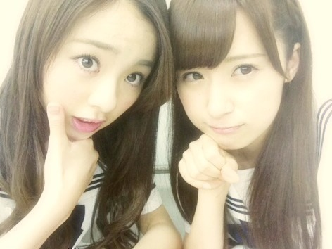
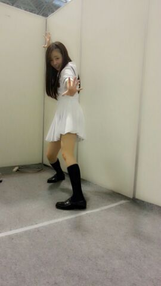

| 2013/07 13 Sat | 川村真洋 冷し梅ジュースって飲むと冷やりしてさっぱりしてきっもちぃ〜))) ろって ぃ- |
らりんとスタバわず〜ヽ(´▽｀)/
Rottyです ！

↑みさ先輩とん。
みさ今隣にいるんだけど
黒髪にしてかわいいよ ！
・^^・・^・・^
あにあにがblogに
まひろのこと書いてくれてた
あに→(・∀・)人(・∀・)←まに
「うっいぇーい☆」
嬉しゅうキモチ。
そしてそして
明日、明後日は秋田県☆ミ
秋田に行くことについて
書きたいけど、明日のblogに
色々書きたいから
今はかーかないっ(〃_〃)てへっ♪
セットリストは
当日までのお楽しみだけど〜
あの曲は ななせまるポジで
その曲は ななみんポジだよ\(〃ω〃)/
あの曲のななせまるポジも
その曲のななみんポジも
初めてなのっ ！！
明日 はっちゃけます！
秋田の皆さん よろしくお願いします★！
本当 今テンションあがってます(^ω^)
ではっ/
今日も皆さんお疲れ様です(о´∀`о)ノシ
ハアッ！！！！！★

☆ろってぃ-のこと しっかり見てたら
好きになりそうです 笑
好きになってもいいですか？
★ぇ(・ω・) そ。そんなに
見つめないで、、、照れちまうぜっ、、
いやん。
... ありがとう ！ 嬉しいよ♪
じゃあ 両思い契約しましょう\(〃ω〃)/
あはは。
☆ユニフォームもらえたん？
★もらえましたよー
嬉しかったなあ、、
またリハーサルの時きていこーかな！
☆ユニフォーム後ろフードつき？
★フードは付いてないよおっ'！
フードつきやったら可愛いですね♪
☆ろってぃ-は関西人やから
やっぱ阪神ファンなの？
★まひろ試合見る時は
両チーム応援したりするかなぁ〜。
好きになりそうです 笑
好きになってもいいですか？
★ぇ(・ω・) そ。そんなに
見つめないで、、、照れちまうぜっ、、
いやん。
... ありがとう ！ 嬉しいよ♪
じゃあ 両思い契約しましょう\(〃ω〃)/
あはは。
☆ユニフォームもらえたん？
★もらえましたよー
嬉しかったなあ、、
またリハーサルの時きていこーかな！
☆ユニフォーム後ろフードつき？
★フードは付いてないよおっ'！
フードつきやったら可愛いですね♪
☆ろってぃ-は関西人やから
やっぱ阪神ファンなの？
★まひろ試合見る時は
両チーム応援したりするかなぁ〜。
☆まひろってさー 球技得意な人？
★球技は得意ちゃうちゃうw
得意ちゃうけどバスケは
すごいやってて楽し〜ヽ(´▽｀)/
アメフトも〜 。
☆ハードルが得意なんやったっけ？
★せやねん、体育館の先生に
学年の女子で一番うまいって
笑われたよ 笑
まっ、当時はねっ あはっ♪
☆新曲の歌詞は全て覚えましたか？
★もちろんさあ )))
まひろのこと
なめてたあきませんよっ(*´∇｀*)わら
☆体調は大丈夫ですか？
★全然 OK OK
めちゃ元気です ！！
☆北海道は七夕８月なんです!!!
知ってましたか？
★ぇえ!!! 本間ですか！？
七夕８月っ ( ; ゜Д゜)
それは驚いたわ。
☆ろってぃ- 自分のこと覚えてるー？
★もちろん。だってよく
コメントしてくれるしね
そりゃ 覚えちゃうよお ((/^ ^)/
☆ろってぃ-は七夕何願ったとー？
★早く、応援してくださっている皆さん
そして、家族に恩返しができます様に...
☆ちなみに覚えてもらうには
何か印象が強い方がいいのかな？
★そりゃあ インパクトあったら
あるだけ すぐ覚えちゃうよ(*^^*)
でも、そんなん関係なく
自分のことを応援してくれる方は
ちゃ〜んと覚えるお〜(*´∇｀*)